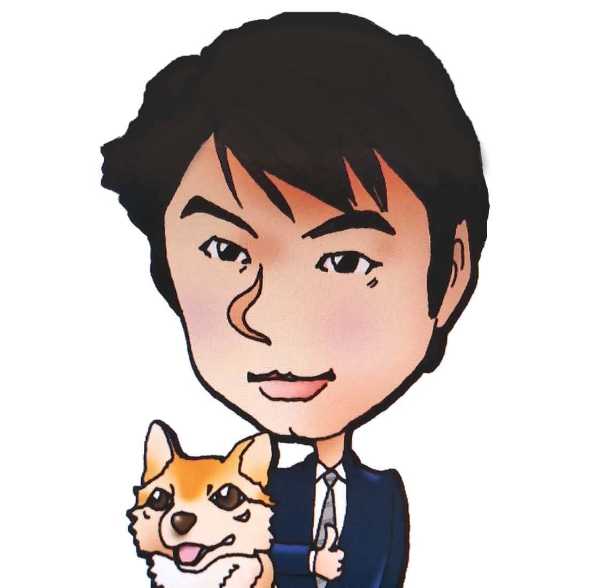

いざわたかしのギャラリーページ
似顔絵 テーブルに置かれた５つのみかん。みかんの置き方によって、リズムを感じられるような配置を考えた。青いインクペンでスケッチのラフな感じでささささっと書きあげた。最高傑作。
地元の湖に飛来した白鳥の写真を見て、描いてみました。白い羽根に環境光がカラフルにさし、白い羽を美しく感じました。水彩画
彼女の歌をよく聞くのでかいてみました。唇が魅力的です。
テレビ番組の「イッテQ」でコモドドラゴンに追いかけられている様子が
印象的でした。追いかけられている感がイイ感じにかけました。
サマーソング特集でAKBを久しぶりに聞いて描きました。
夏といえば水着ですね。